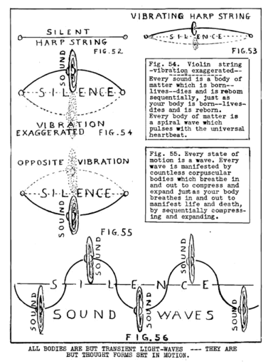

LESSON NUMBER 26 SOUND, SILENCE AND WAVE-VIBRATIONS¶
We will again consider the making of bodies which appear and disappear to LIVE and DIE from another point of view. Let me recall, as heretofore stated, that all that God does is to make bodies to manifest His all-knowing. Also I stated that that is all you likewise do.
Let me again emphasize the fact that all bodies are but states of motion–living-dying states of motion–generating-degenerating states of motion which arise from rest and have to keep moving very fast to simulate the idea of life. As long as they move fast enough they have living bodies but as they slow down, they lose their bodies. To increase their speed they must have energy enough to polarize. They always lose it, however, and depolarize. It is YOU who give them that energy–and it is YOU who take it away.
Instead of using the words states of motion we will substitute the word vibrations. And we will amplify that word by saying wave-vibrations. Let us again amplify this by saying thought-wave-vibrations.
All bodies are transient thought-wave vibrations which come and go to give body forms to thought vibrations. Vibrations of motion extend from stillness.
The heartbeat of Creation is a two-way piston stroke of vibratory motion which extends from the still Light of Mind.
Mind-knowing is real. Moving bodies simulate reality.
We will exemplify this idea of vibratory motion by constructing a body of SOUND WAVES which extend from the silent idea of sound, as waves of water extend from its calm.
Fig. 52 represents the idea of a tone of music in a silent harp string. The desire to give a body to that idea is manifested by setting the string in vibratory motion. To do that you divide the silence of the harp string just as you divide the calm surface of water when you throw a stone into it, which extends the surface into waves.
Fig. 53 represents the harp string vibrating so rapidly that you hear one continuous sound so long as the waves continue to vibrate. Then the sound ceases living. It dies.
What really has happened is that a body of sound was given to an idea of music for a cycle of time–then the vibrations ceased. The sound then disappeared into the silence of rest from which it sprang into motion to manifest the idea. The SOUND appeared–and it disappeared and will reappear–but the silent idea is eternal. It will again appear when desire causes it to reappear.
The IDEA of music does not either live or die. That is changeless and eternal. It is the SOUND, which manifests the music, which lives and dies, just as it is only your body which manifests YOU which lives and dies–then again lives and dies forever and forever.
Again we repeat that life and death are but opposite states of motion–centripetal motion which contracts toward gravity, and centrifugal motion which expands toward space.
LIFE is a fast winding up of light-waves into bodies of visible matter. DEATH is a balanced unwinding of light-waves into invisible matter. I wish you would all meditate long upon this idea. Your all-knowing Inner Voice will tell you many things if you will do this.
THE DIVIDED AND THE UNDIVIDED¶
Before continuing to construct a sound body for a musical tone I wish to give you a thought for you to transform into KNOWING by prolonged meditation.
Consider the familiar motion picture. You know that every expression of life on that screen is motion only. All forms of bodies, and all sounds and actions of bodies, are but the seeming motion of light-waves which have been projected from a still point of rest to simulate motion.
You know also that what seems like motion is due to a very rapid succession of still pictures thrown upon the screen one at a time so rapidly that the eye does not detect any single picture before the next one, of a slightly changed pattern, is projected.
Neither do you detect the blank gap which divides each picture where nothing is. If the projection machine were slowed down very materially your sense of sight would detect each separate picture and the gap between. Likewise, your sense of hearing would detect an interval of silence between each sound, just as you can detect an interval of silence between the explosions of a gatling gun.
The continuity of a steam whistle is due to the intense rapidity of its sequential explosions. If these explosions could be slowed down very materially you would hear them as separate events taking place sequentially on opposite sides of their equator.
What I now wish you to do, in order to increase your comprehension of the CONTINUAL INTERWORKINGS between the divided universe and the undivided universe–also in order for your greater comprehension of the impossibility of dividing the undivided–also for clarifying your comprehension of the illusion which makes it seem possible to divide the undivided–is to imagine the silent harp string as an interval of silence between two musical sounds, and relate that effect to the black gap between sequences of motion pictures, and also relate it to the silent intervals between explosions of a gatling gun.
Take note that in the following drawings there is no sound at all on that equator which is the motionless harp string. That equator is an area of silence–silence unbroken–undivided.
Sound takes place only upon each side of its equator of silence, for there is motion on each side and no motion at all on the dividing equator.
If you fully comprehend what I have just told you, you will fully comprehend the relation of the divided universe of motion which forever repeats its sequences of motion to create illusion, to the undivided universe of stillness from which those sequences of motion are projected.
In other words you will be intellectually able to be constantly aware of the two worlds in which you live–the undivided and the divided–instead of just the one divided world of the senses which has dominated man’s actions for ages.
The supremacy of man is dependent upon the measure of his ability to live knowingly in the undivided Mind universe. The master makes use of the divided universe of sensed matter as he wills–or dismisses it from his Consciousness when he wills.
Until you become master of matter it will master you. The greatest aim of your life should be freedom from matter and to be its master.
That is why I am stressing the mechanics of the divided universe of sensed matter which has made man its slave for ages, in order that knowing man can transcend matter and become its master instead of its slave. For this reason you must know the mechanics of it until it is automatic in you. The small effort of study you give to knowing this principle in your heart is more than priceless to you.
That is exactly what I mean by the transformation which will lift the more spiritually advanced of the human race out of the ages of material man into the age of Cosmic Man. And that also is the reason why you should know the invisible universe of God’s still Light even more abundantly than you can sense the two lights of opposed pressures which constitute the sensed electric universe of divided motion.
Likewise, that is the reason why I am taking this simple example of a harp string to demonstrate how a living-dying body emerges from the seeming nothingness of space to manifest life, and disappears into it to manifest death.
The SOUND which emerges from the silent harp string is as much a physical body as your body is. It is a series of light-waves just as your body is a series of light-waves. The sound issuing from one plucking of a harp string may have hundreds of separate lives, all reincarnations of each other, in a few seconds of time. The fact that your present body has a time cycle of eighty or more years, instead of one thousandth of a second, makes you feel that your body is very different from a body like the sound of a harp string, and that fact makes you lose all sense of cosmic perspective.
You are willing to admit, as a scientific fact, that a body of sound lives, dies and lives again a thousand times in one second, but you have much confusion in comprehending the inevitability of your own repetition of body. You will more fully comprehend the reincarnation as inevitable law when you comprehend that every idea of Mind, without exception, is always manifested by a countless series of bodies which continually change their patterns to conform to the changing images of changing thoughts.
If eternal repetition (or reincarnation, if you wish to call it that) is the one most inviolate law of all creating things, why should you think that it does not apply to you?
As one step in the unfolding of your greater comprehension of timelessness in the undivided universe which I am trying to make your foundation for stronger living, I beg that you will study the diagrams which fully illustrate the creation of a hundred “reincarnated” bodies of one idea in one second–or even one fraction of a second.

Archival Plate (image049.gif)¶
You think of these hundreds of bodies as VIBRATIONS, yet you would not think of your present “life” as but just one unit of a vibration of millions of years in duration instead of one fraction of a second.
I would like to have you begin to think of your body that way, and as the timed manifestation of an idea which is eternal and timeless.
I would like to have you elevate your Consciousness to the level of full awareness of your Self as The Universal Presence–The Universal Being–rather than think of yourself as a body which has a name and address and personality.
As awareness of Being in you unfolds, the sense of individuality will disappear just as one tone of a harp string loses its separateness in the wholeness of the master symphony.
That is the way Cosmic Man of tomorrow will think of himself. That is the way I want you to think of your Self. When you think of yourself as one individual unit of Creation you are but that one unit–struggling for survival and for self-interest among the countless other individual units. When you think that way you are weak, for your desires are self-centered and the world will not enrich you with its glory, nor its bounty, for you are not enriching it.
When your desires are for the WHOLE–and when you know that you are the WHOLE–then only are you STRONG.
A new race of men are coming into Being–a race of men who will be STRONG through having learned how to lose their bodies to find their Soul in the Universal Soul.